Calcul et dimensionnement d'une sphère de stockage de butane conforme aux codes ASME VIII et CODAP
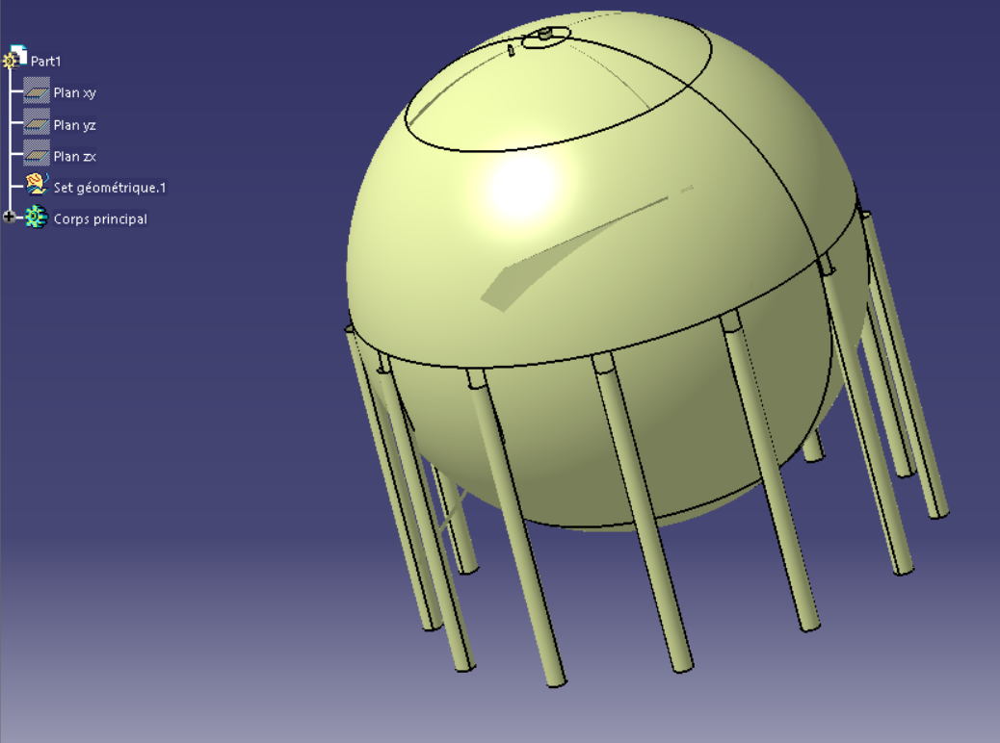
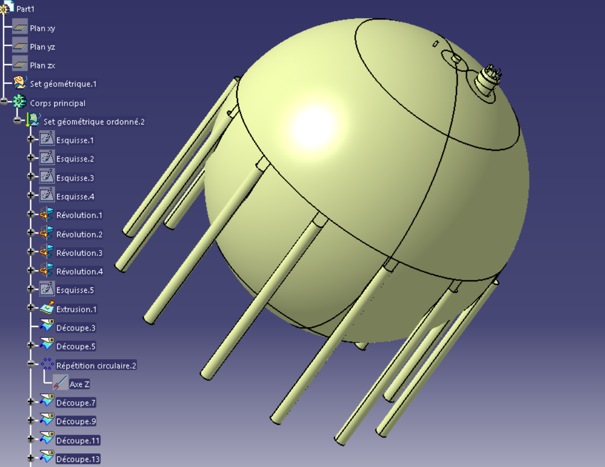
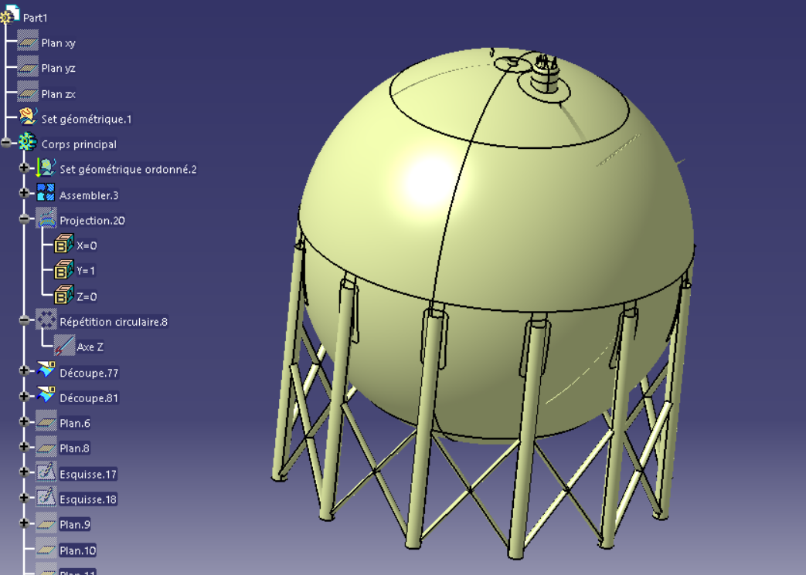
Projet complet de dimensionnement d'un réservoir sphérique sous pression, mené de la conception jusqu'à la validation numérique selon ASME VIII et CODAP. Après la réalisation du modèle surfacique et l'attribution des épaisseurs aux différentes surfaces, une mise en plan a été effectuée afin d'obtenir une vue détaillée du projet : les différentes zones de la sphère, les supports, les piquages ainsi que les zones nécessitant des renforcements.
L'analyse des piquages et le dimensionnement des renforts ont été menés conformément aux exigences normatives, avec un calcul des charges sismiques selon le RPS 2011 et des charges de vent selon les règles NV65. Le dimensionnement des supports a suivi la norme CM66, avec descente de charges pour les fondations.
La simulation numérique a été réalisée sous Abaqus afin d'évaluer les contraintes, les déplacements et les zones critiques de la structure sous pression interne, poids propre et efforts extérieurs. L'ensemble des calculs a été consolidé dans une note de calcul complète sous Excel et Mathcad.
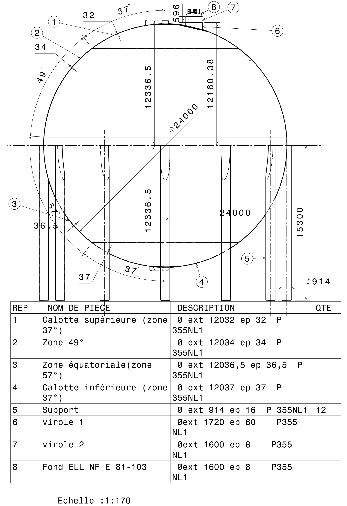
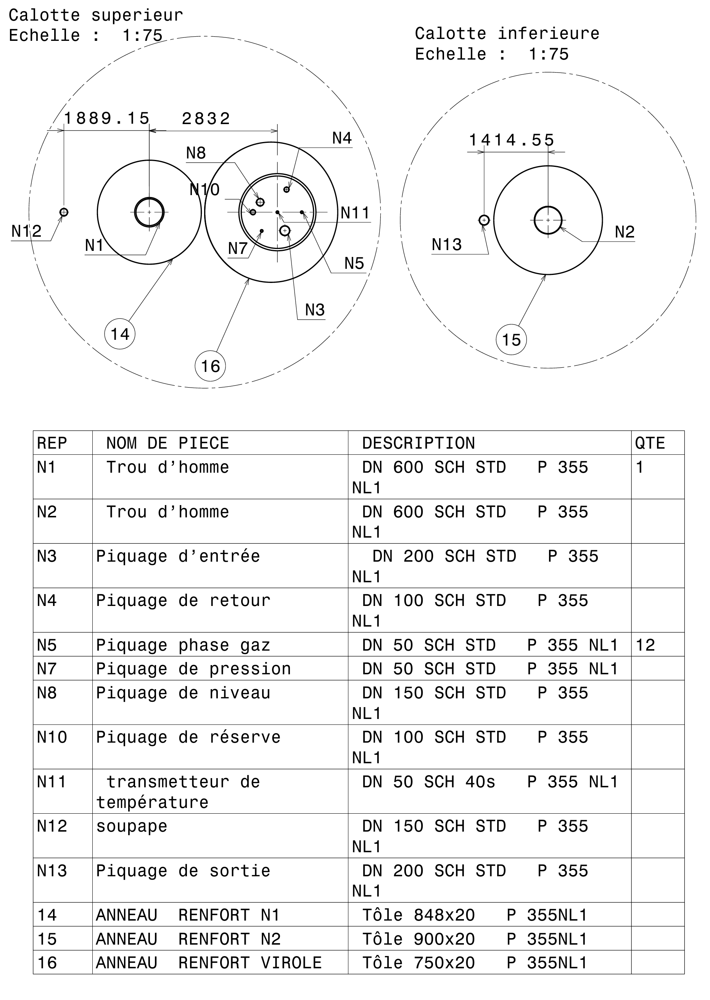
Maillage
Après la création du modèle géométrique, un maillage tétraédrique a été généré sous Abaqus afin de discrétiser la structure. Un raffinement du maillage a été appliqué dans les zones critiques, notamment au niveau des supports, des piquages et des régions soumises à de fortes concentrations de contraintes. Cette stratégie permet d'améliorer la précision des résultats tout en conservant un temps de calcul raisonnable.
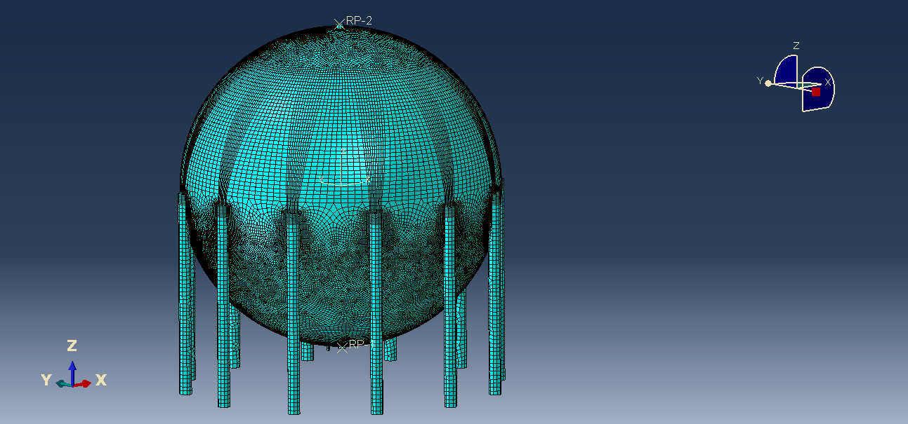
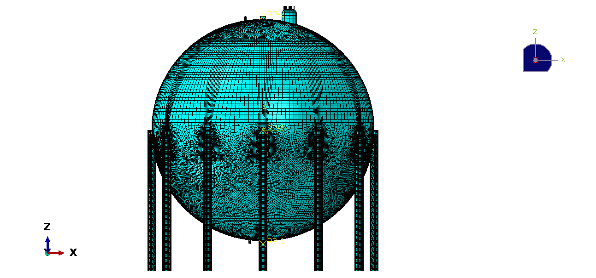
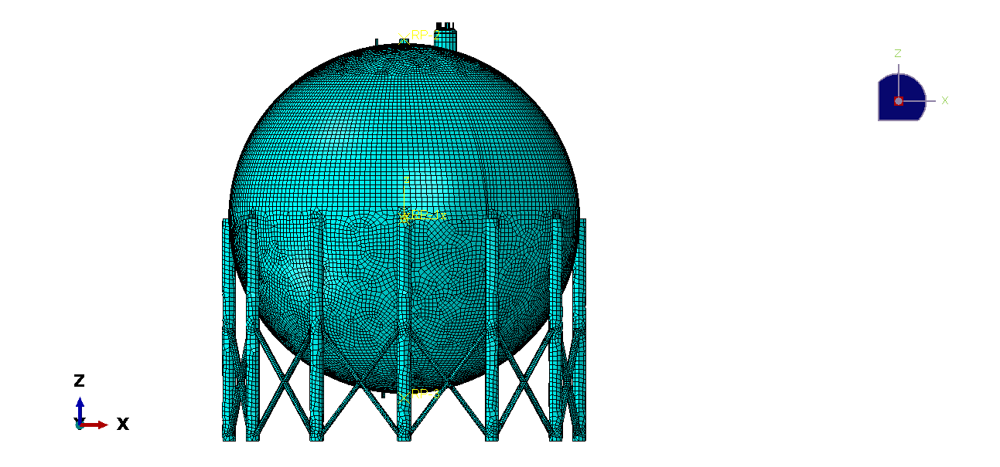
Simulation par Abaqus
Situation de service

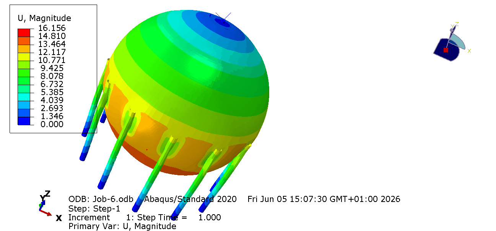
Situation d'épreuve
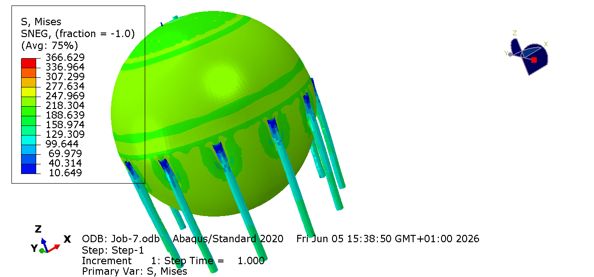
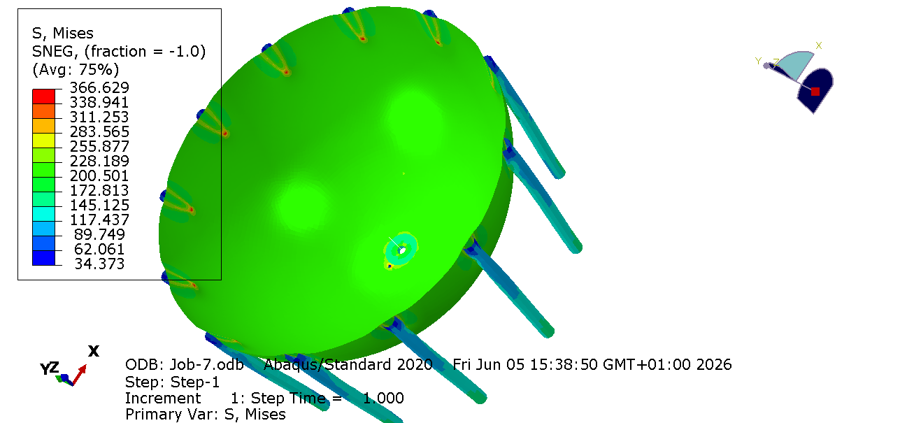
Solution pour éviter le pic de contrainte : ajout d'une plaque de renfort

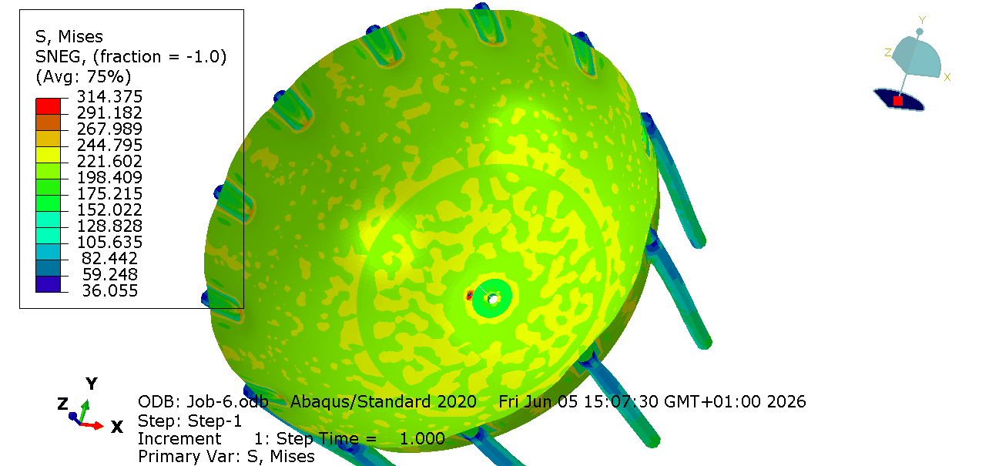
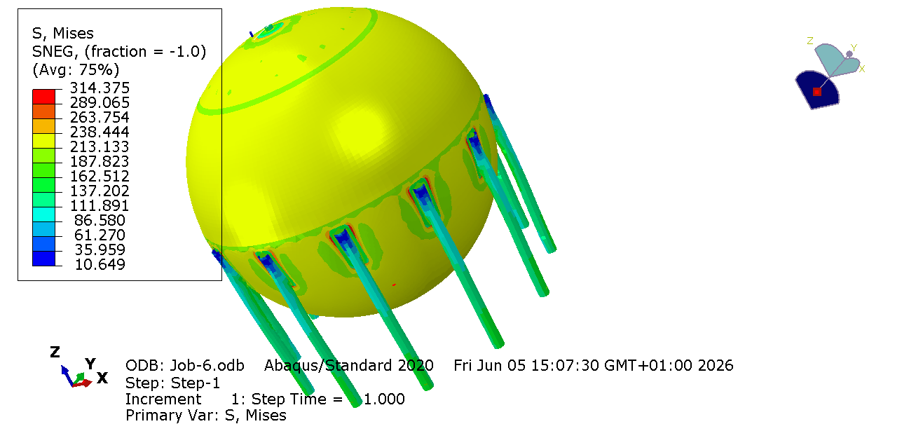
Vérification avec demi-cylindre
Situation de service
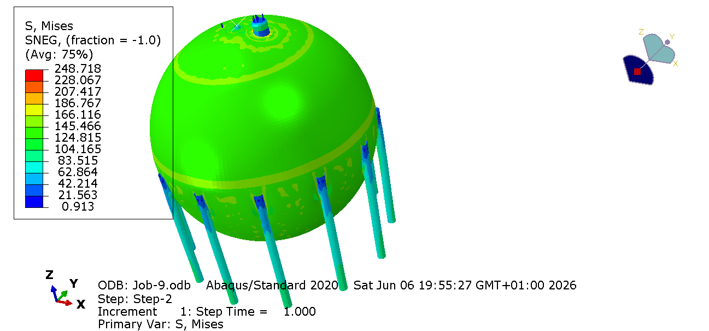
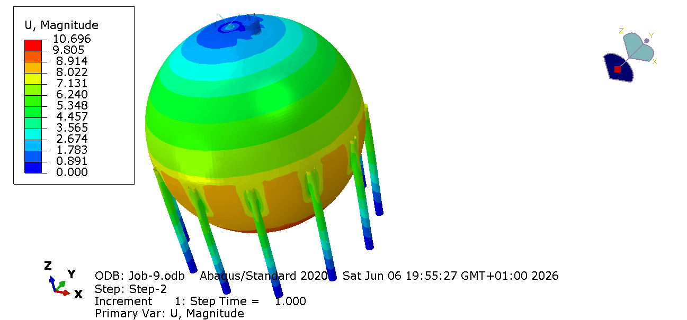
Situation d'épreuve
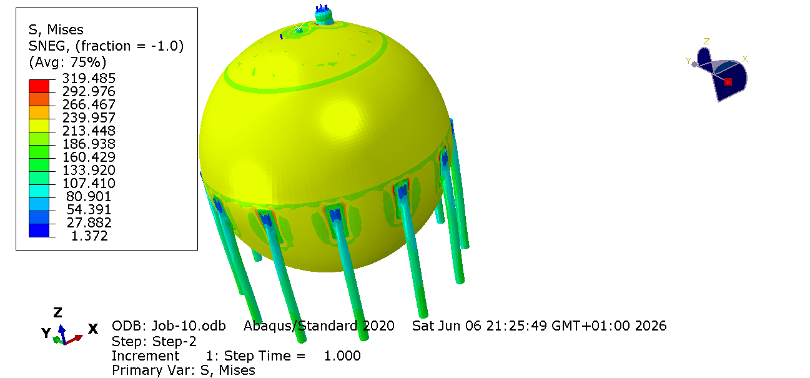
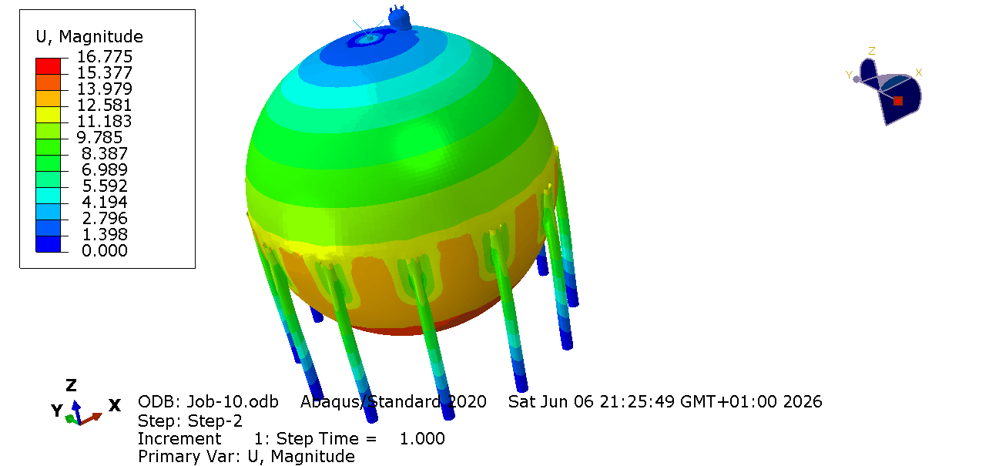
Vérification sous les actions sismiques et du vent
.png)
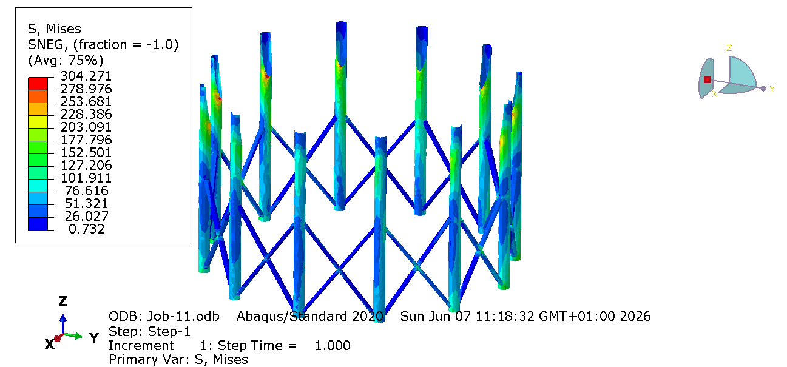